Trophies rebuild
Tracks, feats and chases. Branch claude/trophies-rebuild-738248, 2026-11-13. Every image is a real SwiftUI render from the simulator.
Before and after: the Trophies segment
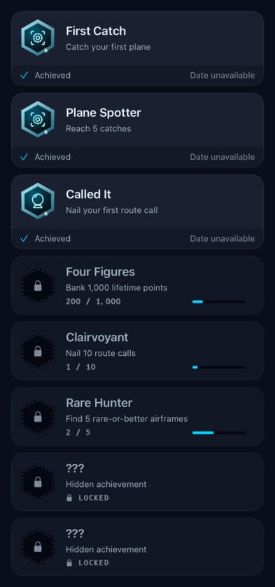
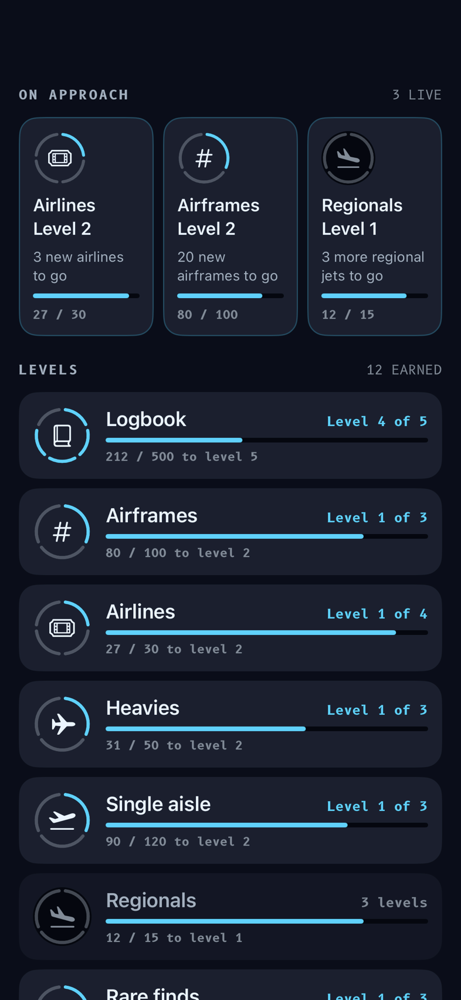
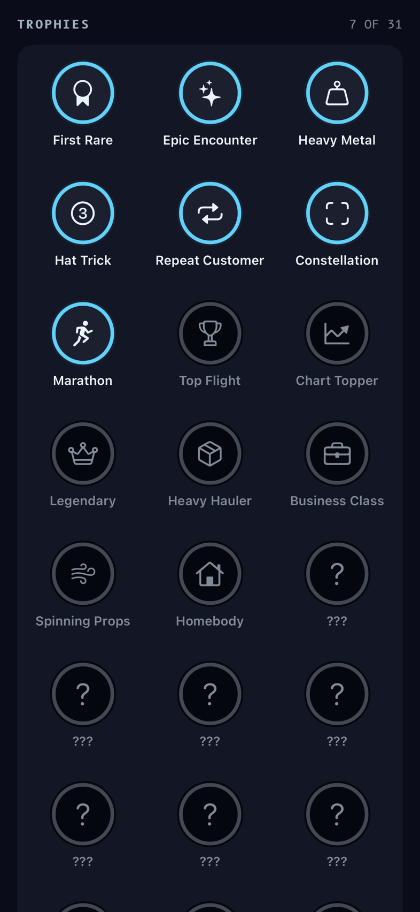
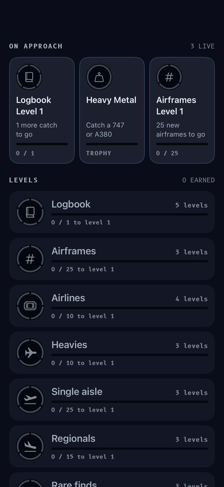
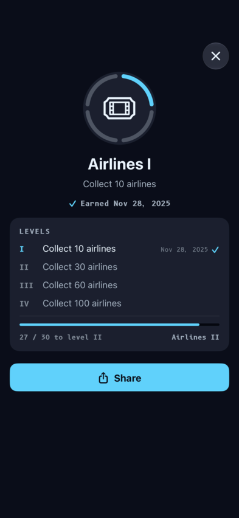
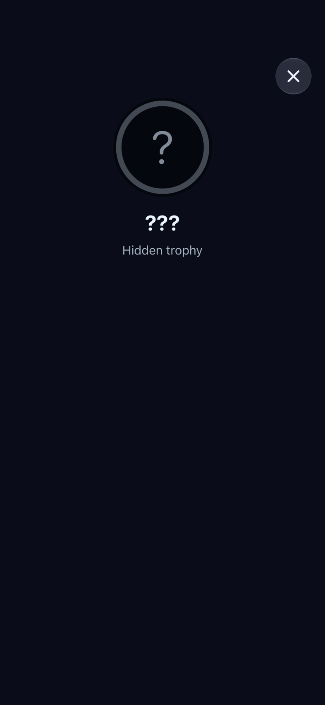
After the catch reveal
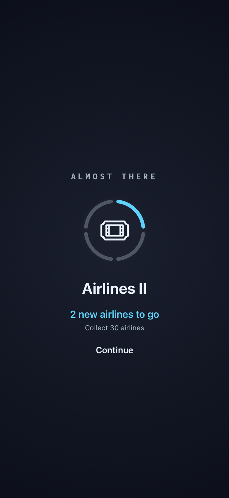
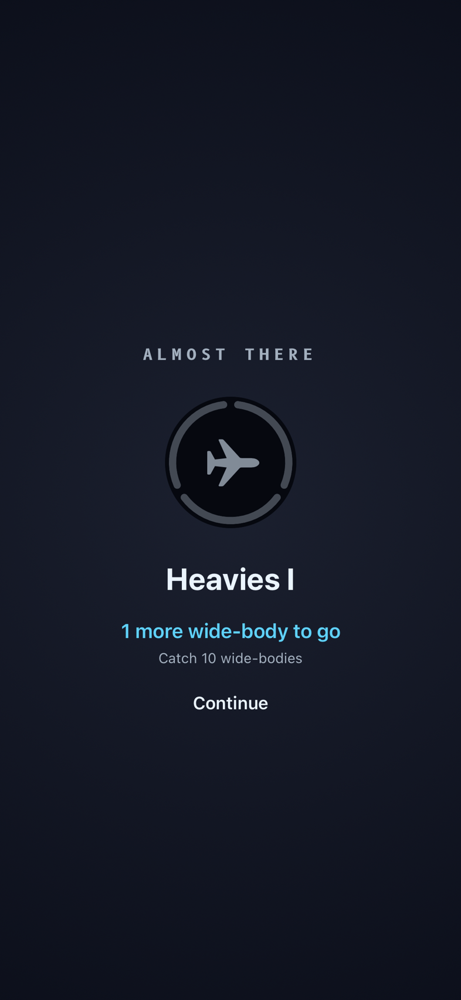
Sharing and moments
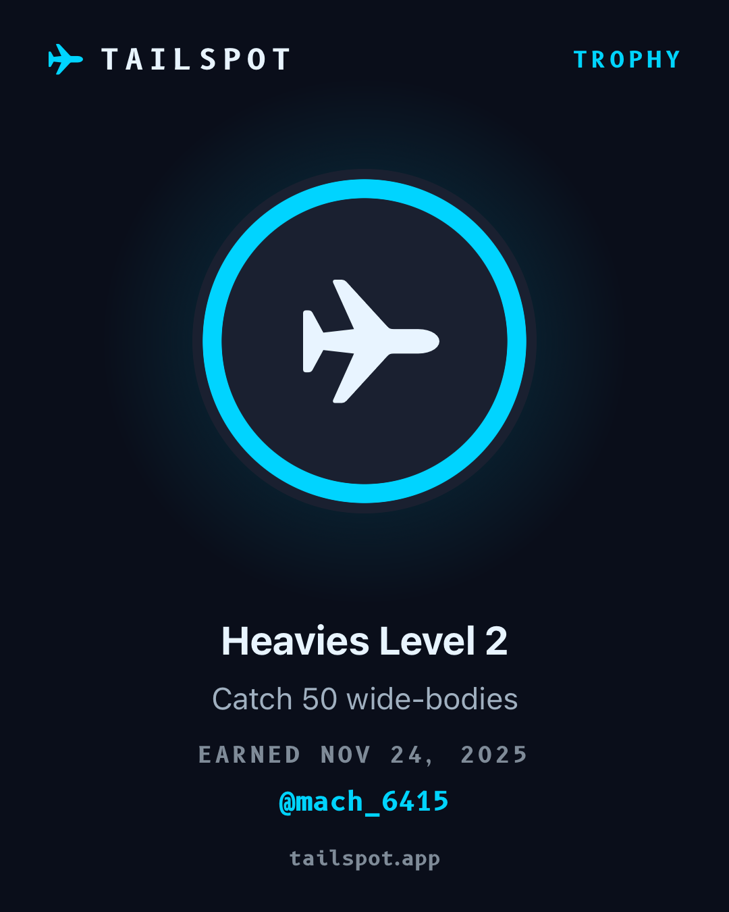
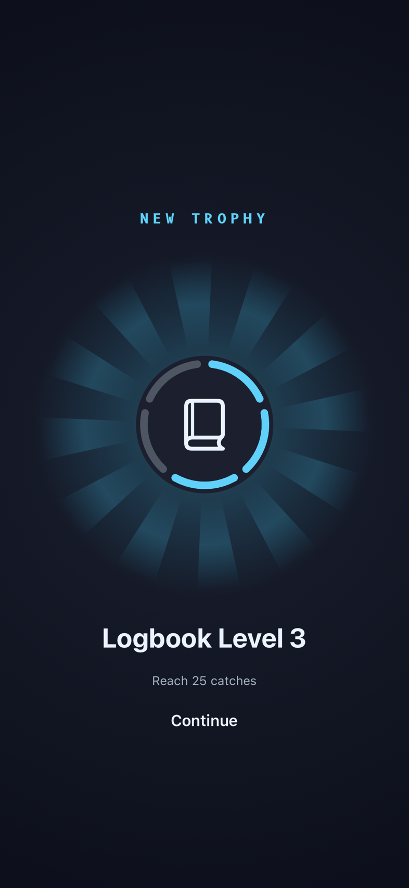
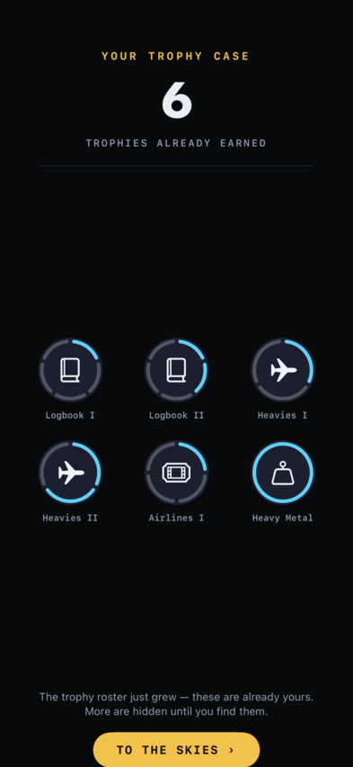
Behaviours
| Thing | Behaviour |
|---|---|
| Existing trophies | Same ids, thresholds and ledger. Nothing earned is lost and no old unlock fires again. |
| Tracks | 15 tracks; existing count trophies are their levels; 13 new top levels (roster version 5). |
| Chases | Nearest track, then a "different plane" pick, then next nearest; topped up to three from feats. |
| Update flood | More than three newly granted levels show one recap, not a card each. |
| Almost there | Shown after the reveal when the catch moved a track to within two of its next level. Not shown if the catch unlocked something, for goals under 5, or twice for one level. |
| Analytics | trophies_tab_viewed, trophy_detail_opened, trophy_share_opened, trophy_share_completed, trophy_near_shown; trophy_unlocked gains track and level. |
The mocks this was chosen from
Left to right: A catch photo, B stamp, C glyph. Noah picked C and asked for no photo in the detail.
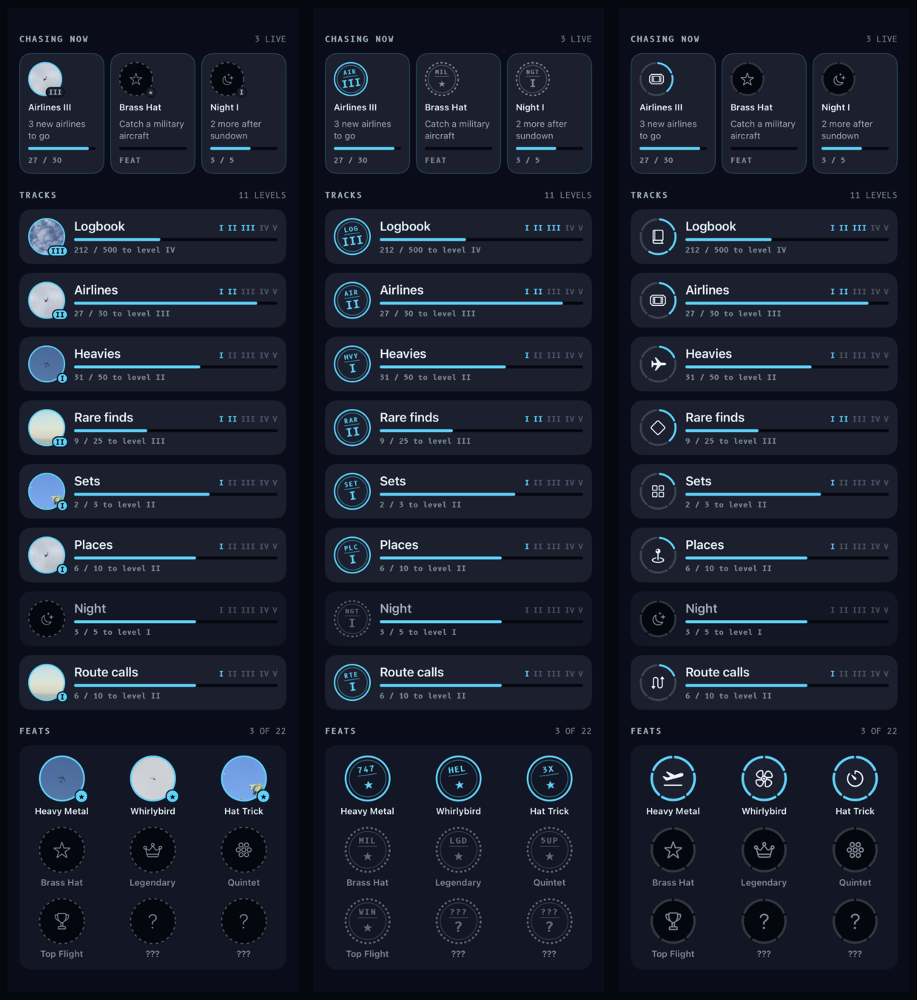
Not yet verified
- Nothing has run on a phone. The share sheet, the Almost-there card after a real catch, and the tab-viewed event inside the paged Hangar need a device check.
- The thresholds of the 13 new levels are first guesses.